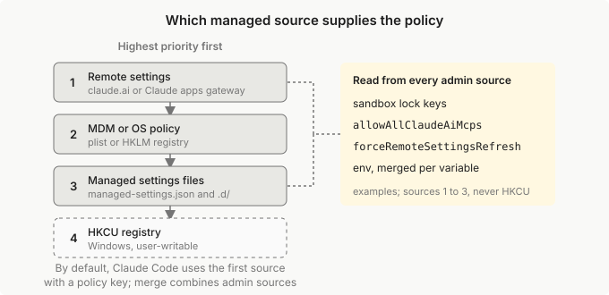

部署托管设置
将托管设置部署到每个开发者的机器上：按操作系统的交付机制、Claude Code 如何组合托管源，以及如何验证强制执行。
托管设置是您的组织部署到每个开发者机器上的设置。Claude Code 将它们应用于所有其他级别之上，因此没有用户、项目、本地或 --settings 值可以覆盖它们，除了少数安全敏感的例外，其中来自较低级别的更严格值仍然适用。
本页面适用于部署托管设置或调试为什么某个设置未应用的管理员。要决定要强制执行什么，请从决定要强制执行什么表开始。有关 claude.ai 控制台路径，请参阅服务器托管设置。有关开发者自己的值放在哪个文件中，请参阅设置。
部署托管设置文件
这是在每台机器上放置策略的最快方式：一个 managed-settings.json 文件。如果您还没有选择如何交付托管设置，或您的设备在 MDM 下或开发者运行云会话，请先阅读选择交付机制。
1. 编写 managed-settings.json
编写一个 managed-settings.json，其中包含您决定要强制执行的密钥，采用与 settings.json 相同的 JSON 形状。决定要强制执行什么表列出了每个控制后面的密钥，设置参考中的每个条目都说明了托管源是否可以设置它。此文件阻止两个文件读取，关闭绕过模式，并使 Claude Code 忽略来自用户、项目和本地文件以及 --allowedTools 的权限规则：
{
"permissions": {
"deny": [
"Read(./.env)",
"Read(./secrets/**)"
],
"disableBypassPermissionsMode": "disable"
},
"allowManagedPermissionRulesOnly": true
}
有关显示更多托管密钥形状的更完整示例，包括登录方法、模型、MCP 服务器和市场，请参阅组织的托管设置。
2. 将文件放在每台机器上
将文件保存为 managed-settings.json，位于操作系统的系统目录中，使用已经在您的设备群上放置文件的任何工具：
- macOS:
/Library/Application Support/ClaudeCode/managed-settings.json - Linux 和 WSL:
/etc/claude-code/managed-settings.json - Windows:
C:\Program Files\ClaudeCode\managed-settings.json
3. 确认策略已应用
在一台机器上，在 Claude Code 内运行 /status。Setting sources 行显示 Enterprise managed settings (file)。在此之后推出到设备群的其余部分；当该行缺失时，检查策略是否有效涵盖了要查看的内容。
选择交付机制
上述步骤中的文件是将托管设置放到机器上的四种方式之一。每种机制都携带与 settings.json 文件相同的策略密钥，因此设置参考适用于所有这些。少数密钥与特定源相关联，每个条目的 Scope 行说明了哪些：
- 交付控制：
policyHelper、wslInheritsWindowsSettings和managedSourcesBehavior - 网关登录密钥：
forceLoginGatewayUrl、gatewayInternalNetworks和forceLoginMethod的"gateway"值
托管设置文件、MDM 配置文件或 claude.ai 控制台对其到达的每个人应用一个策略。要为一组开发者提供不同的策略，请将不同的文件或配置文件部署到该组；claude.ai 控制台还不能针对一个组，而自托管Claude 应用网关按 IdP 组交付托管设置。
当多个机制向同一台机器交付策略时，Claude Code 默认使用一个并忽略其他的。Claude Code 如何组合托管源给出了顺序和适用于每个源的选择加入。
MDM 和文件行一起称为端点托管设置，因为策略存储在开发者的设备上，而不是服务器托管行，其中 Claude Code 获取它。
通过您已经管理设备的方式选择一个机制，使用下表。
| 机制 | 如何交付 | Claude Code 何时读取 | 何时使用 |
|---|---|---|---|
| 服务器托管设置 | 在 claude.ai 管理控制台中，或在自托管Claude 应用网关上 | 在启动时获取并每小时轮询一次；请参阅需要批准的更改 | 您想要一个地方为 claude.ai 组织更改策略，而无需接触每台机器 |
| MDM 或操作系统级策略 | 作为 macOS 配置文件或 Windows HKLM 注册表值，通过 Jamf、Intune、组策略或类似工具；请参阅每个机制存储策略的位置 |
在启动时读取并每 30 分钟检查一次更改 | 您已经使用 MDM 或组策略管理设备 |
| 基于文件 | 作为每台机器上系统目录中的 managed-settings.json；请参阅每个机制存储策略的位置 |
在启动时读取并在文件更改时重新加载 | 没有 MDM 的机器、Linux 主机或您自己构建的镜像 |
| HKCU 注册表，Windows 和 WSL | 作为 Windows HKCU 注册表值；请参阅每个机制存储策略的位置 |
在启动时读取并每 30 分钟检查一次更改；Claude Code 仅在没有上面存在的管理文档且没有主机提供的父设置提供限制性密钥时使用它 | 您无法写入机器级 HKLM 密钥 |
Jamf、Iru、Intune 和组策略的入门模板在MDM 示例存储库中。
如果您的组织已应用 HIPAA 配置，请参阅设置示例仓库中的 settings-hipaa.json 和 README-hipaa.md，获取更完整的 managed-settings.json，其中包含沙箱隔离、网络允许列表、凭据保护和本地数据保留。
对于托管 MCP 服务器，您通过 managed-mcp.json 与这些中的任何一个一起部署或通过 managedMcpServers 密钥提供，请参阅托管 MCP 配置。
策略应用的位置和时间
部署的策略到达开发者的会话如下：
- 表面：在开发者的机器上，终端、VS Code 和 JetBrains 扩展、桌面应用的 Code 选项卡和Agent SDK会话读取所有这些源。Agent SDK 会话即使在
settingSources排除用户、项目和本地文件时也加载托管设置。 - 云会话：Anthropic 托管环境中的会话不读取设备的 MDM 配置文件或文件，因此其策略必须来自服务器托管设置。自托管环境中的会话也读取其运行器镜像中的托管设置文件，默认情况下仅当服务器托管设置不交付策略密钥时，除了Claude Code 从每个管理源读取的密钥。Claude Code 如何组合托管源涵盖了适用于两者的选择加入。
- Claude Tag 会话：Claude Tag会话在云环境中运行，但不接收服务器托管设置。在自托管环境中，它们仍然读取运行器镜像中的托管设置文件。在Claude Tag 管理员设置中配置 Claude Tag 本身。
-
协作会话：Claude Desktop 应用中的协作在 Claude Code 上运行其会话。在协作会话中，Claude Code 永远不会从 claude.ai 管理控制台获取服务器托管设置，即使用户使用 Team 或 Enterprise 帐户登录，因此应用的策略取决于会话运行的位置：
-
在用户的机器上：默认情况下，协作会话中的 Claude Code 读取该设备上的 MDM 或操作系统级策略和托管设置文件，因此在那里部署策略。
- 在完整 VM 沙箱中：当您的 Claude Desktop 托管配置设置
requireCoworkFullVmSandbox时，Claude Code 在虚拟机内运行，其中设备的 MDM 策略和托管设置文件不存在。 - 远程协作会话：这些在 Anthropic 托管的虚拟机上运行，其中 Claude Code 没有设备策略可读。
无论会话在何处运行，claude.ai 在任何人从 claude.ai 上的 git 仓库或从 Cowork 中的 Customize 添加市场时，都会自行应用管理控制台的 strictKnownMarketplaces 和 blockedMarketplaces 列表。限制如何工作描述了该检查。使用入口覆盖范围表比较了 Cowork 与其他使用入口。
* 运行会话：大多数更改在交付机制表中的计划上到达运行会话，无需重启。
* 对 forceRemoteSettingsRefresh、requiredMinimumVersion 和某些用户可编辑密钥的更改在下一个会话启动时生效。
* 新的或更改的 policyHelper 条目在下一次启动时生效。如果服务器托管设置在该启动时遮蔽了助手，助手会在获取报告这些设置被删除时立即运行。
* 需要批准的更改：除了等待下一次启动的更新，对需要批准的设置（如钩子或 env 变量）的服务器托管更改等待开发者在交互式会话中接受对话，并在 IDE 扩展或 Agent SDK 托管的会话中应用当前运行。其他服务器托管更改在下一次轮询时应用。
* 长期会话：保持打开数周的会话仍然可能滞后于推出。requiredMinimumVersion阻止过时的二进制文件启动，不会结束已经运行的会话。
每个机制存储策略的位置
密钥在任何地方都是相同的，但每个机制以不同的位置和形状存储它们：
- 服务器托管：Anthropic 的服务器或您的网关持有策略。Claude Code 保留一个本地缓存，在启动时应用它，并在每次成功获取时替换。
- macOS 配置文件：
com.anthropic.claudecode托管首选项域。使用与managed-settings.json相同的顶级密钥，嵌套设置为字典，列表为 plist 数组。 - Windows HKLM 注册表：JSON 作为
HKLM\SOFTWARE\Policies\ClaudeCode下名为Settings的REG_SZ或REG_EXPAND_SZ值。 - 基于文件：
managed-settings.json、可选的managed-settings.d/目录和managed-mcp.json在系统目录中：macOS 上的/Library/Application Support/ClaudeCode/、Linux 和 WSL 上的/etc/claude-code/，以及 Windows 上的C:\Program Files\ClaudeCode\。Claude Code 不读取旧版 Windows 路径C:\ProgramData\ClaudeCode\managed-settings.json。
您可以将这些文件中的任何一个部署为符号链接，Claude Code 会读取链接指向的文件。当链接指向系统目录之外，或 Claude Code 无法确认它位于系统目录之内时，策略仍然适用。此时 /status 和 claude doctor 中会显示一条指明该文件的警告。要清除该警告，请将链接指向系统目录内的目标。
* Windows HKCU 注册表：HKCU\SOFTWARE\Policies\ClaudeCode 下的相同 Settings 值。
跨团队拆分基于文件的策略
如果多个团队拥有一个策略的部分，将每个部分放在 managed-settings.d/ 中的自己的文件中，位于与 managed-settings.json 相同的系统目录中，而不是编辑一个共享文件。
Claude Code 首先合并 managed-settings.json，然后按字母顺序合并目录中的每个 *.json 文件。使用数字前缀命名文件以控制顺序，例如 10-telemetry.json 和 20-security.json。Claude Code 忽略隐藏文件和不以 .json 结尾的文件。
当两个文件设置相同的密钥时，Claude Code 按这些规则组合它们：
- 单个值，例如
"model": "opus"或"cleanupPeriodDays": 7：后面文件的值替换前面的值 - 列表，例如
permissions.deny或sandbox.network.allowedDomains：两个列表组合，删除重复项 - 嵌套块，例如
env或sandbox：两个块逐个密钥合并，每个密钥内遵循这些相同的规则 fallbackModel：后面的链整体替换前面的链extraKnownMarketplaces和managedMcpServers：具有相同名称的后面条目整体替换前面的条目modelPicker：后面的阵容整体替换前面的阵容
Claude Code 如何组合托管源
当您的组织向同一台机器交付多个托管源时，managedSourcesBehavior 键决定 Claude Code 对其他源的处理方式：
"first-wins"，默认值：Claude Code 使用提供至少一个策略键的最高排名源，并忽略其余源，而不是合并它们，除了 从每个管理员源读取的键 中的键。Claude Code 不会对跳过的源显示警告；/status命名它使用的源和跳过的源。"merge"：Claude Code 应用每个提供策略键的管理员源，并按键的类型组合它们：在大多数键上，较高排名源的值适用，列表合并，锁采用最严格的值。组合每个托管源 说明在哪里设置键以及每种键的组合方式。需要 Claude Code v2.1.242 或更高版本。
两种设置以相同的方式对源进行排名。这些术语在本节中重复出现：
- 策略键：除了两个控制键
wslInheritsWindowsSettings和managedSourcesBehavior之外的任何设置键。仅包含这些键的托管设置文件或 MDM 策略不计数，Claude Code 会移至下一个源。 - 管理员源：下面前三个源之一。HKCU 注册表是用户可写的，不是管理员源。
Claude Code 按此顺序检查源，优先级最高的优先：
- 远程设置，从 claude.ai 作为 服务器管理的设置 或通过 Claude 应用网关 交付。Claude Code 仅在会话使用 符合条件的凭据 直接向 Anthropic 的 API 进行身份验证、使用
/login登录网关，或在 Claude Desktop 的 Code 标签页中通过 为该会话提供设置 的网关运行时才获取此源。在其他提供商上，或当ANTHROPIC_BASE_URL指向 Anthropic 的 API 以外的地方时，它从下一个源开始 - MDM 或操作系统级策略：macOS plist 或 HKLM 注册表键
- 托管设置文件，
managed-settings.d/*.json和managed-settings.json合并在一起 - HKCU 注册表，在 Windows 上，以及在 WSL 上一旦 HKLM 注册表或 Windows 托管设置文件打开
wslInheritsWindowsSettings并且 HKCU 值也设置它时。Claude Code 仅在 其上方没有存在的管理员文档 且没有 主机提供的父设置 提供限制性键时才读取它
此图显示排名，以及 Claude Code 在任一设置下从前三个源读取的跨源键的示例：

管理员文档何时算作存在
在 托管源的排名 中，Claude Code 永远不会在存在的管理员文档之下应用用户可写的 HKCU 注册表。文档在以下情况下算作存在：
- 它将任何策略键设置为非
null值，即使是 Claude Code 无法读取的值 - 它是存在但无法读取的 HKLM 值、托管设置文件或
managed-settings.d目录
在 WSL 上，/etc/claude-code 也是用户可写的，wslInheritsWindowsSettings 条目说明 Windows 文档何时位于其上方。
从每个管理员源读取的键
在默认的 "first-wins" 设置下，Claude Code 仅从 它选择的源 读取大多数键，即使选定的源未设置该键，也会忽略较低排名源中的值。
少数键的工作方式不同。Claude Code 从每个管理员源读取它们，因此当选定的源不设置时，较低排名的 MDM 策略或托管设置文件仍然可以设置它们。Claude Code 将用户可写的 HKCU 注册表排除在该扫描之外；当 HKCU 是唯一的源且没有主机提供父设置时，HKCU 的应用方式与任何选定的源相同。
跨源键包括：
sandbox.network.allowManagedDomainsOnly和sandbox.filesystem.allowManagedReadPathsOnly：任何管理员源中的true都会打开锁。当锁打开时，Claude Code 会合并它锁定的允许列表，sandbox.network.allowedDomains与WebFetch(domain:...)允许规则，或sandbox.filesystem.allowRead，跨每个管理员源。没有锁时，Claude Code 将允许列表视为任何其他键，因此在"first-wins"下，未选定的管理员源的允许列表被忽略allowAllClaudeAiMcpsallowManagedMcpServersOnly：任何管理员源中的true都会打开 MCP 允许列表锁。当锁打开时，托管的allowedMcpServers列表来自设置一个的最高排名管理员源。服务器管理的列表替换较低源的列表，而不是与其组合。
如果没有管理员源设置列表，每个通过拒绝列表的服务器都会加载，除非 父设置 提供列表。
没有锁时，Claude Code 从它应用的托管源读取 allowedMcpServers，因此在 "first-wins" 下，未选定的管理员源的列表被忽略。需要 Claude Code v2.1.273 或更高版本
* deniedMcpServers 和 disableClaudeAiConnectors：任何管理员源中的条目或 true 都会应用。需要 Claude Code v2.1.273 或更高版本
* 沙箱二进制路径 sandbox.bwrapPath 和 sandbox.socatPath
* 沙箱 ripgrep 二进制文件，sandbox.ripgrep
* sandbox.filesystem.disabled 和 sandbox.network.strictAllowlist
* useAutoModeDuringPlan、syncClaudeAiSkills 和 syncClaudeAiPlugins，其中任何管理员源的 false 都会关闭该行为。开发人员的用户或本地设置中的 false 也会关闭它；每个键只能拒绝
* enableArtifact，其中任何管理员源的 false 都会关闭 Artifact 工具。开发人员的用户、项目或本地设置中的 false 也会关闭它，没有源会将其打开；请参阅 哪些较低级别的值仍然计数。需要 Claude Code v2.1.242 或更高版本
* maxEffortLevel，其中任何管理员源中的最低上限适用。如果开发人员在自己的设置或使用 --settings 中设置了较低的上限，Claude Code 会应用该上限；没有源可以提高上限。需要 Claude Code v2.1.267 或更高版本
* attribution 中的提交预告片选择退出，或在已弃用的 includeCoAuthoredBy 中，来自任何层级
* forceRemoteSettingsRefresh
* env，跨管理员源按变量合并：每个变量来自定义它的最高优先级源，因此较低源填充较高源未设置的变量。少数变量遵循自己的规则；跨托管源的每个键异常 命名每一个。需要 Claude Code v2.1.223 或更高版本。在 v2.1.223 之前，Claude Code 仅应用选定源的整个 env 块
allowedProviders 有自己的规则：其条目的 Scope 注释说明机器上设置的列表如何与服务器管理的列表组合。需要 Claude Code v2.1.285 或更高版本。
当管理员源设置 allowManagedMcpServersOnly 或 allowedMcpServers 列表且该值不是生效的值时，/status 和 claude doctor 命名该源和键。
哪个托管源提供登录键
在具有 MDM 策略或托管设置文件的机器上，Claude Code 从该策略或文件中获取登录键，即使对于 远程设置 也设置了的键也是如此。来自 claude.ai 管理控制台的设置属于远程设置，因此请在 MDM 策略或文件中设置登录键，例如 forceLoginOrgUUID。
如果机器同时具有 MDM 策略和托管设置文件，请使用 MDM 策略。当该策略设置了任何 策略键 时，Claude Code 会忽略文件中的登录键，即使在 managedSourcesBehavior: "merge" 下也是如此。
登录键包括：
- 设置为
"claudeai"或"console"的forceLoginOrgUUID和forceLoginMethod：如果策略或文件省略了其中任一键，则远程设置中的值适用。在每个客户端都运行 v2.1.299 或更高版本之前，也请在 claude.ai 的 服务器管理的设置 中设置这些键 - 网关登录键：Claude Code 不会将远程设置中的值用于网关登录
组合每个托管源
要让 Claude Code 应用您的组织交付的每个管理员源，请在您部署的最高排名源中将 managedSourcesBehavior 设置为 "merge"。Claude Code 仅从具有该键或策略键的最高排名源读取该键，因此较低源无法选择自己与上面的源合并，从不接收服务器管理设置的机器也需要在其 MDM 配置文件中有该键。用户可写的 HKCU 注册表永远不会与另一个源合并。需要 Claude Code v2.1.242 或更高版本。
在 "merge" 下，Claude Code 添加较低源的列表条目，如 permissions.allow 规则和 hooks，到策略中，因此仅当排名低于最高源的每个源都在管理员的控制下时才打开它。
此表显示 Claude Code 在 "merge" 下如何组合每种键。managedSourcesBehavior 条目 命名三行中的每个键：限制允许列表、整体取值和仅从最高排名源读取的键。
| 键的类型 | Claude Code 如何组合它 | 示例 |
|---|---|---|
| 列表 | 组合来自每个源的条目 | permissions.allow、hooks、sandbox.network.allowedDomains、deniedMcpServers、deniedModels |
| 锁 | 应用任何源设置的最严格值；较宽松的值仅从最高排名源适用 | allowManagedHooksOnly、permissions.disableBypassPermissionsMode、crossSessionInbound、availableModelsMatch |
| 限制允许列表 | 从设置它的最高排名源整体取值，不添加来自较低源的条目 | availableModels、allowedMcpServers、strictKnownMarketplaces、allowedChannelPlugins 和 fallbackModel 链 |
| 整体取值 | 从设置它的最高排名源整体取值，不组合来自较低源的条目或字段 | sandbox.credentials.awsPairs、sandbox.ripgrep |
| 提供的 MCP 服务器 | 组合来自每个源的服务器名称；当两个源设置相同的名称时，应用较高排名源的整个条目 | managedMcpServers |
| 仅从最高排名源读取的键 | 忽略每个较低源中的键，即使最高排名源未设置它 | modelPicker、permissions.defaultMode 以及凭据助手如 apiKeyHelper |
env |
在任一设置下跨管理员源按变量合并，如 从每个管理员源读取的键 所述 | |
| 登录键 | 在任一设置下，从 MDM 策略或托管设置文件中获取（以其中带有 策略键 的排名较高者为准），优先于远程设置 | forceLoginOrgUUID、forceLoginMethod 和 网关登录键 |
| 所有其他键 | 从设置它的最高排名源取值 | model、cleanupPeriodDays |
要确认机器上组合了哪些源，请 读取 /status 中的 Setting sources 行；该部分说明每个标签的含义。
使用辅助程序计算策略
policyHelper 是您的 MDM 策略或托管设置文件命名的可执行文件，Claude Code 在启动时运行它来计算托管设置。当选定的源配置一个并且辅助程序发出 managedSettings 对象时，该输出改变 Claude Code 读取的内容：
- 发出的
managedSettings对象是会话的唯一托管设置，包括对于 它否则从每个管理员源读取的键，除了forceRemoteSettingsRefresh，它有自己的启动规则
对于哪些辅助程序运行失败，以及当一个失败时 Claude Code 做什么，请参阅 辅助程序失败。
让嵌入主机添加策略
当另一个应用程序启动 Claude Code 时，如 Claude Desktop、IDE 扩展或 Agent SDK 应用，该主机可以通过 SDK managedSettings 选项传递自己的托管设置。Claude Code 将这些称为父设置。
默认情况下，只要存在管理员源，Claude Code 就会忽略父设置：服务器管理的设置、MDM 或操作系统级策略，或托管设置文件。
要让 Claude Code 将父设置与管理员源合并，请在最高优先级托管源中将 parentSettingsBehavior 设置为 "merge"；Claude Code 仅从该源读取该键。
Claude Code 然后仅保留主机的限制 Claude 可以做什么的值，有一个需要了解的间隙：除非您也设置 allowManaged*Only 锁，主机的权限允许规则和沙箱允许列表仍然适用。请参阅 限制父设置 以了解锁。
policyHelper 可以独立于此键关闭父合并；其条目说明何时。
Claude Code 也对父提供的值本身应用这些检查：
- 当任何管理员源设置
allowManagedPermissionRulesOnly时，Claude Code 会删除 父提供的 权限允许规则和additionalDirectories，即使较高优先级源未设置该键。该键对您自己的权限规则的影响来自 Claude Code 应用的托管设置，或来自您选择合并的父设置 - Claude Code 强制执行它应用的托管设置中的
forceLoginOrgUUID或allowedMcpServers值，并阻止父提供的值。如果您交付多个托管源，请参阅 哪个源提供forceLoginOrgUUID。
在 Claude Code v2.1.273 或更高版本上，当 allowManagedMcpServersOnly 打开时，来自设置一个的最高排名管理员源的 allowedMcpServers 列表应用并阻止父的，作为 跨源键。父的列表仅在没有管理员源设置一个时应用。managedSourcesBehavior 条目说明在 "merge" 下哪个源提供每个键。在 v2.1.223 之前，任何管理员源中的值都会阻止父的值
* 对于 availableModels，Claude Code 强制执行它应用的托管设置中的值并阻止父提供的列表
* 对于 strictKnownMarketplaces，Claude Code 同样强制执行它应用的托管设置中的列表并阻止父提供的列表。父的列表仅在没有应用的托管源设置一个时应用。需要 Claude Code v2.1.282 或更高版本
* 对于 allowedProviders，选定的托管源 中的列表会阻止父提供的列表；在选择启用 managedSourcesBehavior "merge" 时，任何管理员源中的列表都会阻止父提供的列表。需要 Claude Code v2.1.285 或更高版本
* 父提供的 blockedMarketplaces 除了托管源设置的任何阻止列表外还适用。需要 Claude Code v2.1.282 或更高版本
当仅应用托管规则时保持 Cowork 文件夹访问
Claude Desktop 应用中的 Cowork 在 Claude Code 上运行其会话，并通过它在启动会话时提供的允许规则授予每个会话对其工作文件夹（如用户连接的文件夹）的访问权限。当您的托管策略设置 allowManagedPermissionRulesOnly 时，Claude Code 仅保留托管策略中的允许规则：它删除主机作为父设置、--allowedTools 或设置文件中提供的允许规则，因此对这些文件夹的写入失去其预先批准。在要求编辑前提示的 Cowork 会话中，Cowork 无法显示提示，Claude 将每次写入报告为被阻止，因为路径解析为受保护的位置或连接文件夹外的路径。
要恢复写入，请为这些文件夹添加允许规则到 Claude Code 选择 的托管源在这些机器上：在 MDM 管理的队列上，那是 MDM 策略而不是单独的托管设置文件。此示例使用文件形式，MDM 策略采用相同的键。它保持 allowManagedPermissionRulesOnly 设置并允许在每个用户主目录中的 CoworkProjects 文件夹下编辑；用您的用户连接的文件夹替换路径：
{
"allowManagedPermissionRulesOnly": true,
"permissions": {
"allow": [
"Edit(~/CoworkProjects/**)"
]
}
}
部署策略后，Claude 可以在新 Cowork 会话中的该文件夹下保存文件。读和编辑规则 涵盖路径语法，包括绝对路径的 // 形式。
开发人员可以更改什么
开发人员自己的设置文件、--settings 值和项目文件永远不会覆盖托管值；异常 仅让更严格的较低级别值计数。这些情况在该规则之外：
- 会话的模型：托管的
model是默认值，不是锁。--model和ANTHROPIC_MODEL仍然为该会话选择模型，因此部署availableModels来限制选择。 - 会话的自动压缩窗口：托管的
autoCompactWindow也是默认值。--autocompact标志和CLAUDE_CODE_AUTO_COMPACT_WINDOW变量仍然为该会话设置 自动压缩窗口。 - 本地管理员权限：作为机器上的管理员的开发人员可以编辑托管源本身，这就是为什么 MDM 工具可以按计划重新部署配置文件或文件，以及为什么 HKLM 注册表和 macOS 托管首选项域存在。
- 服务器管理的缓存：服务器管理的设置来自 Anthropic 的服务器，对本地缓存的编辑 仅持续到下一次成功获取。
- 其他工具：托管设置仅绑定 Claude Code。从另一个工具调用 API 的开发人员不在它们下。
检查策略是否生效
开发人员报告说某个策略未应用，或者您想在将其推送到整个设备群之前确认推出已完成。该机器上的两个命令可以回答这个问题：/status 显示 Claude Code 选择了哪个托管源，claude doctor 列出它丢弃了什么。
在 /status 中读取源
在开发人员的机器上，在 Claude Code 中运行 /status 并读取 Setting sources 行。当托管源生效时，该行列出 Enterprise managed settings，并在括号中显示 Claude Code 选择的源：
(remote)：来自 claude.ai 或网关的服务器管理的设置(plist)或(HKLM)：MDM 或操作系统策略(file)、(drop-ins)或(file + drop-ins)：managed-settings.json、drop-in 目录或两者(remote + file, merged)或其他以, merged结尾的列表：您的组织组合每个托管源，Claude Code 将列出的源合并到策略中。较低的源仍然可以提供env变量而不出现在列表中。需要 Claude Code v2.1.242 或更高版本(HKCU)：用户可写的注册表回退(parent process)：嵌入主机提供的限制性设置(helper)：由选定的 MDM 或文件源配置的policyHelper
当 Claude Code 在机器上找到托管源但未选择它时，第二行 Skipped sources 会列出每个这样的源。读取它以区分策略从未到达机器和策略到达但被更高优先级源覆盖的情况。需要 Claude Code v2.1.242 或更高版本。
当策略未应用时，Setting sources 行告诉您有以下两个问题中的哪一个：
- 该行缺失：Claude Code 未找到传递策略密钥的托管源。
如果您部署了托管设置文件，请检查它是否位于操作系统的路径中，以及它是否包含策略密钥而不仅仅是控制密钥。不是有效 JSON 的文件不会产生这种状态；Claude Code 拒绝启动。
当您改为通过服务器管理的设置部署时，运行 claude doctor，它报告获取结果。
* 该行命名的源不是您部署的源：存在更高优先级的源，Claude Code 忽略了您的源，Skipped sources 列出了它。Claude Code 如何组合托管源给出了顺序。
查找 Claude Code 丢弃的条目
如果您的托管设置文件、MDM 配置文件、注册表值或服务器管理的负载未通过 schema 验证，Claude Code 首先跳过它可以修复的每个单独条目（例如一个无效的权限规则），并针对每个条目发出警告。然后，Claude Code 丢弃仍然验证失败的任何值，除非该值属于失败关闭的密钥之一。
Claude Code 对 policyHelper 发出的 managedSettings 更严格：它进行相同的条目修复，但任何幸存的 schema 违规都会导致整个 helper 运行失败，在启动时 Claude Code 拒绝启动，与 helper 以非零状态退出相同。
当托管设置文件、drop-in 文件、MDM plist 或 HKLM 注册表值存在但无法解析为 JSON 对象时，Claude Code 拒绝启动并打印命名源的错误，即使另一个管理员源传递有效策略。每个源在以下情况下以这种方式失败：
- 托管设置文件或 drop-in 文件：文件不是有效的 JSON，或其顶级不是对象
- MDM plist：macOS 的
plutil报告 plist 格式错误，或其转换的内容不是 JSON 对象 - HKLM 注册表值：
Settings值不是字符串、为空或不包含 JSON 对象
三种源状态不会导致此拒绝：
- 缺少的文件、配置文件或注册表值不是失败；Claude Code 在没有该源的情况下运行。
- 空的托管设置文件计为
{}。 - 用户可写的 HKCU 注册表密钥中的格式错误的值永远不会阻止启动。Claude Code 在
/status和claude doctor中将其报告为通知。
当托管设置文件、drop-in 文件、managed-settings.d/ 目录、MDM 配置文件或 HKLM 注册表值存在但无法读取，且没有管理员源提供策略时，发生的情况取决于读取失败的原因：
- 如果操作系统拒绝了读取，例如在仅限 root 的文件上，每个会话都会在没有该源的策略的情况下启动。
/status和claude doctor记录失败，使用-p运行也会将其打印到 stderr。 - 对于任何其他读取失败，例如 I/O 错误，每个会话在启动时以联系管理员的消息退出。
要查找丢弃的条目，请查看以下三个位置之一：
- 交互式会话在启动时显示一个对话框，列出无效条目。
- 使用
-p的非交互式运行将摘要打印到 stderr。 claude doctor列出每个无效条目及其源和字段。
失败关闭的密钥
当托管源设置具有单个限制性值的顶级密钥（例如 allowManagedPermissionRulesOnly、disableAutoMode 或 skipDangerousModePermissionPrompt）为 Claude Code 无法读取的内容时，该密钥读取为该值，直到您修复它。报告说该密钥 was present but invalid，并命名 Claude Code 将其视为的值。对于 sandbox 内的密钥，请参阅sandbox 内的无效值。
这些情况不会失败关闭：
null删除该密钥。- 无效的
disableAllHooks，即使是带引号的布尔值，也会被丢弃并带有警告，因为强制执行true也会卸载您自己的托管设置部署的 hook。 - 对于规则涵盖的每个其他布尔设置项，字符串
"true"或"false"读取为该布尔值，在/status中带有通知，要求您删除引号。
Claude Code 按字段而不是整体修复 permissions、autoMode、worktree 和 attribution 块：
- 其中的锁（例如
permissions.disableBypassPermissionsMode）读取为其限制性值。 - 无效的
permissions.defaultMode读取为default。 - 当
permissions中的deny或ask列表根本无法读取时，Claude Code 扣留allow和additionalDirectories，因此授予永远不会应用而没有写在旁边的限制。报告命名每个扣留的授予和无法读取的列表。 - 在
autoMode中，无法读取的soft_deny或hard_deny列表，或丢失无效条目的列表，以相同方式扣留allow和environment。
具有单个限制性值的密钥的失败关闭规则和按字段修复需要 Claude Code v2.1.282 或更高版本。
这些密钥有自己的回退：
| 字段 | 存在但无效时的行为 |
|---|---|
allowedMcpServers |
强制执行为空的允许列表，直到修复该值，因此用户添加的 MCP 服务器都不被允许。您的组织通过 managedMcpServers 传递的服务器仍然加载，managed-mcp.json 服务器根据跳过允许列表检查的服务器加载。单个无效条目被剥离，有效子集被强制执行。 |
allowedProviders |
强制执行为空的允许列表，直到修复该值，因此每个 API 提供商都被拒绝，Claude Code 在机器上不启动。如果只有单个条目不是已知的提供商名称，Claude Code 会丢弃并报告该条目并强制执行其余的。 |
allowedHttpHookUrls |
Claude Code 强制执行空的托管允许列表，直到您修复该值，因此 HTTP hook 仅在另一个设置文件列出其 URL 时运行。如果只有单个条目无效，Claude Code 会剥离该条目并强制执行其余的。 |
httpHookAllowedEnvVars |
Claude Code 强制执行空的托管允许列表，直到您修复该值，因此仅当另一个设置文件命名标头变量时才会插值。如果只有单个条目无效，Claude Code 会剥离该条目并强制执行其余的。 |
allowedChannelPlugins |
Claude Code 强制执行空的允许列表，直到您修复该值，因此传递给 --channels 的任何频道插件都不被允许。如果只有单个条目无效，它会剥离该条目并强制执行其余的。 |
strictKnownMarketplaces |
强制执行为空的允许列表，直到修复该值，因此不允许任何市场源。无效或无法强制执行的单个条目（例如无法编译的 hostPattern 正则表达式）被剥离，有效子集被强制执行。 |
availableModels |
强制执行为空的允许列表，直到修复，因此只有默认模型可用；非字符串条目被剥离，有效子集被强制执行。 |
availableModelsMatch |
视为 exact，直到修复该值。 |
forceLoginOrgUUID |
在修复该值之前，不允许任何组织登录。 |
gatewayInternalNetworks |
当无效值来自机器上最高的托管源时，/login 拒绝该机器上的每个新云网关登录，直到修复该值。 |
crossSessionInbound |
视为 refuse，最严格的值，因此入站跨会话消息被拒绝，直到修复该值。开发人员看到警告。 |
deniedMcpServers |
单个无效条目被剥离，有效子集被强制执行。完全无效的值被丢弃并带有警告，因为拒绝每个服务器会阻止策略从未命名的服务器。 |
deniedModels |
非字符串条目被剥离，列表的其余部分被强制执行。完全无效的值被丢弃并带有警告，在修复之前不会阻止任何模型。 |
blockedMarketplaces |
单个无效条目被剥离，有效子集被强制执行。解析但永远无法匹配的条目（例如无法编译的 hostPattern 正则表达式）被保留并带有警告。在修复之前它不会阻止任何内容，但市场限制保持活跃。完全无效的值被丢弃并带有警告，因为阻止每个市场会阻止策略从未命名的源。 |
sandbox |
当块内的一个值无效时，Claude Code 不会丢弃整个块。对于每种无效字段发生的情况，请参阅sandbox 内的无效值。 |
sandbox.credentials |
可恢复的无效条目降级为 mode: "deny" 并带有警告；不可恢复的条目被剥离；有效条目保持强制执行。请参阅托管设置中的无效凭据条目。 |
strictPluginOnlyCustomization |
视为 true，锁定所有四个使用入口，当该值既不是布尔值也不是数组时。此版本不识别为使用入口的数组条目不锁定任何内容；状态注释计算此类条目，以便您可以检查它们是否有拼写错误。 |
enabledPlugins |
无效条目被丢弃并带有警告，其他条目保持强制执行。不是插件 ID 映射的值，或其每个条目都无效的值，被整体丢弃并带有警告。 |
allowedHttpHookUrls 和 httpHookAllowedEnvVars 跨设置文件合并，因此您的用户、项目或本地设置中的条目在托管列表为空时仍然适用。
这两个密钥和 allowedChannelPlugins 的回退需要 Claude Code v2.1.267 或更高版本；早期版本在其值或任何条目无效时整体丢弃该密钥。strictKnownMarketplaces 和 blockedMarketplaces 的回退需要 Claude Code v2.1.277 或更高版本；早期版本在其值或任何条目无效时整体丢弃该密钥。strictPluginOnlyCustomization 和 enabledPlugins 的回退需要 Claude Code v2.1.282 或更高版本。
requiredMinimumVersion 和 requiredMaximumVersion 按设计失败开放：无效值被丢弃而不是强制执行。
此容限仅适用于托管设置。用户、项目和本地设置文件保持严格：JSON 或顶级形状验证失败的文件被整体拒绝并报告，失败的单个条目（例如格式错误的权限规则）被跳过并带有警告，而文件的其余部分适用。
sandbox 内的无效值
当托管 sandbox 块中的一个值无效时，Claude Code 不会丢弃整个块，因为它独立验证每个字段。这种按字段处理需要 Claude Code v2.1.283 或更高版本。在 v2.1.283 之前的版本上，当 credentials 外的值无效时，Claude Code 会丢弃除 credentials 外的每个 sandbox 字段。
您为无效字段获得的警告会命名该字段并告诉您它发生了什么。发生的情况取决于该字段控制的内容：
- 如果您将布尔密钥设置为带引号的
"true"或"false"，该值计为该布尔值。而不是警告，/status显示一个通知，要求您删除引号。 - 如果
failIfUnavailable无效，Claude Code 会丢弃该值而不是将其视为true，因此无法读取的值永远不会停止整个设备群中的会话启动。 - Claude Code 将每个其他无效布尔值视为保持沙箱最严格的值，直到您修复它。打开沙箱或其限制之一的密钥（例如
enabled或network.allowManagedDomainsOnly）计为true。放松它的密钥（例如allowUnsandboxedCommands）计为false。 - 在
credentials外的列表中，例如excludedCommands或network.allowedDomains，Claude Code 会丢弃无效条目并保留列表的其余部分。不是数组的列表或没有有效条目的列表根本不适用。 - 当
network.deniedDomains或其中任何条目无效时，Claude Code 也会扣留network.allowedDomains，因此托管允许列表在您修复拒绝列表之前不会授予任何内容。 - 当
filesystem.denyRead、filesystem.denyWrite或其中任何条目无效时，Claude Code 也会扣留filesystem.allowRead和filesystem.allowWrite，直到您修复拒绝列表。
仅托管源可以设置的密钥
Claude Code 仅从托管源读取以下密钥；将它们放在用户或项目设置文件中无效。
大多数是锁：锁管理的值，例如权限规则或 sandbox.network.allowedDomains，是任何级别都可以设置的普通密钥，锁告诉 Claude Code 仅尊重托管值。
表涵盖权限、插件和交付控制。对于此处未列出的任何密钥，设置参考索引的 Scope 列说明它是否仅托管。
| 设置 | 描述 |
|---|---|
allowAllClaudeAiMcps |
加载 Claude Code 自己获取的 claude.ai 连接器，与部署的 managed-mcp.json 一起，而不是抑制它们 |
allowedChannelPlugins |
可能推送消息的通道插件的允许列表。设置时替换默认 Anthropic 允许列表。需要 channelsEnabled: true。请参阅限制哪些通道插件可以运行 |
allowManagedHooksOnly |
当 true 时，限制哪些 hooks 运行；请参阅在 allowManagedHooksOnly 下运行什么以获取完整效果列表 |
allowManagedMcpServersOnly |
当 true 时，仅尊重来自托管设置的 allowedMcpServers。deniedMcpServers 仍然从所有源合并。请参阅从每个管理源读取的密钥以了解哪些托管源可以设置它，以及托管 MCP 配置 |
allowManagedPermissionRulesOnly |
使托管设置成为权限规则的唯一设置源。条目列出它忽略的每个源 |
blockedMarketplaces |
市场源的阻止列表。被阻止的源在下载前被检查，因此它们永远不会接触文件系统。请参阅托管市场限制 |
channelsEnabled |
允许组织的通道。请参阅企业控制以获取每个计划上的默认值 |
disableCommandPluginSources |
当 true 时，完全阻止command 插件源，因此市场声明的命令永远不会运行。也阻止市场headersHelper 命令，除了托管设置本身声明的市场。未设置时，遵循 allowManagedHooksOnly。需要 Claude Code v2.1.229 或更高版本，headersHelper 块需要 v2.1.238 或更高版本 |
disableSideloadFlags |
在启动时拒绝 --plugin-dir、--plugin-url、--agents 和 --mcp-config 标志。在云会话中，Claude Code 删除服务器通过 --mcp-config 交付的 MCP 服务器，除了其参考条目列出的异常，并启动会话。需要 Claude Code v2.1.193 或更高版本 |
forceRemoteSettingsRefresh |
当 true 时，阻止 CLI 启动，直到远程托管设置被新鲜获取，如果获取失败则退出。请参阅失败关闭强制执行 |
managedMcpServers |
提供给每个用户的远程 MCP 服务器，与他们自己的一起。它提供服务器而不是锁定任何东西。请参阅通过托管设置提供服务器。需要 Claude Code v2.1.259 或更高版本 |
managedSourcesBehavior |
Claude Code 是仅应用最高优先级托管源还是组合它们中的每一个 |
parentSettingsBehavior |
主机提供的父设置是否在托管策略下合并 |
pluginSuggestionMarketplaces |
Claude Code 可以在终端中向用户建议其插件的市场 |
pluginTrustMessage |
附加到安装前显示的插件信任警告的自定义消息 |
policyHelper |
在启动时计算托管设置的可执行文件；请参阅使用策略助手计算托管设置 |
sandbox.filesystem.allowManagedReadPathsOnly |
当 true 时，仅尊重来自托管设置的 filesystem.allowRead 路径。denyRead 仍然从所有源合并 |
sandbox.network.allowManagedDomainsOnly |
仅尊重托管 allowedDomains 和 WebFetch(domain:...) 允许规则；阻止其他域而不提示 |
strictKnownMarketplaces |
控制用户可以添加和安装插件的插件市场源。请参阅托管市场限制 |
strictPluginOnlyCustomization |
阻止来自用户和项目源的 skills、agents、hooks 和 MCP 服务器；true 锁定所有四个，数组命名哪些 |
wslInheritsWindowsSettings |
当在 HKLM 注册表或 C:\Program Files\ClaudeCode 下的文件中设置时，让 WSL 读取 Windows 策略链，仅当没有 Windows 管理文档存在时读取 /etc/claude-code；条目给出顺序 |
在 Team 和 Enterprise 计划上，Owner 在Claude Code 管理设置中为组织启用或禁用 Remote Control 和云端会话。当 Owner 关闭 Remote Control 时，运行 Claude Code v2.1.286 或更高版本的已连接会话也会断开连接。每个会话会在下次刷新您组织的策略时断开连接，大约每小时一次。有关这些会话中会发生什么，请参阅 Remote Control was turned off by your organization's policy。
Remote Control 还可以通过 disableRemoteControl 设置按设备禁用。云端会话没有按设备的托管设置密钥。
要检查这些组织设置是否到达给定机器，在那里运行 claude doctor 并读取 Organization policy 行，它说 Claude Code 从哪里加载策略或为什么它没有加载。需要 Claude Code v2.1.261 或更高版本。在运行会话中，当策略未加载时，/status 显示相同的行。
为您的组织关闭遥测
Claude Code 默认在使用 Anthropic API 的会话上发送 Anthropic 操作遥测，无论是直接、通过 LLM 网关还是通过自定义 ANTHROPIC_BASE_URL；按 API 提供商的默认行为说明哪些提供商发送它。要为每个开发者关闭它而不依赖每个人的 shell，通过托管设置的 env 块交付 DISABLE_TELEMETRY。此示例为策略到达的每个人设置 DISABLE_TELEMETRY：
{
"env": {
"DISABLE_TELEMETRY": "1"
}
}
Claude Code 应用 1 的值而不向用户显示批准对话。
如果您关闭遥测，Claude Code 停止发送为您的组织分析仪表板提供的使用数据，用于策略到达的开发者。该变量也关闭需要功能标志获取的功能的功能标志获取。对于远程控制，请参阅远程控制要求。
策略应用的位置和时间说明哪个交付机制到达每个表面，平台可用性说明哪些会话跳过服务器托管设置获取。
如果您的组织使用客户托管的加密密钥并通过网关路由 Claude Code，配置代理和网关说明为什么这些会话需要此变量。
另请参阅
- 为您的组织设置 Claude Code：决定要强制执行什么以及如何强制执行
- 服务器托管设置：从 claude.ai 控制台或网关交付策略
- 托管 MCP 配置：控制开发者可以使用哪些 MCP 服务器
- 所有设置：每个密钥，以及托管源是否可以设置它
- 示例设置文件：显示托管密钥形状的完整
managed-settings.json